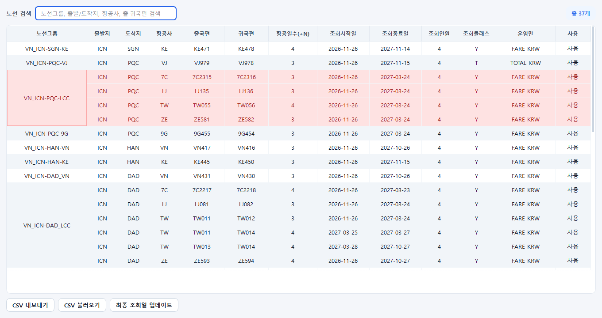
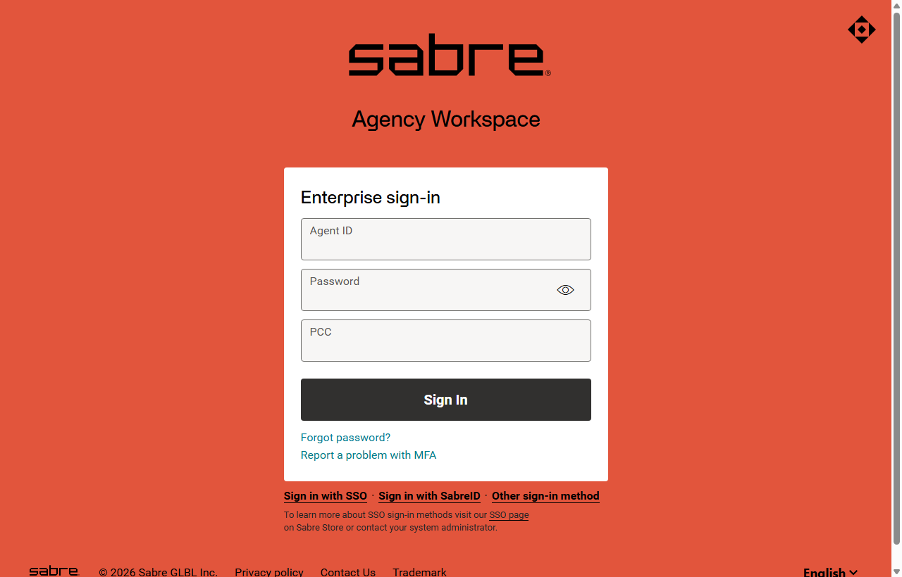
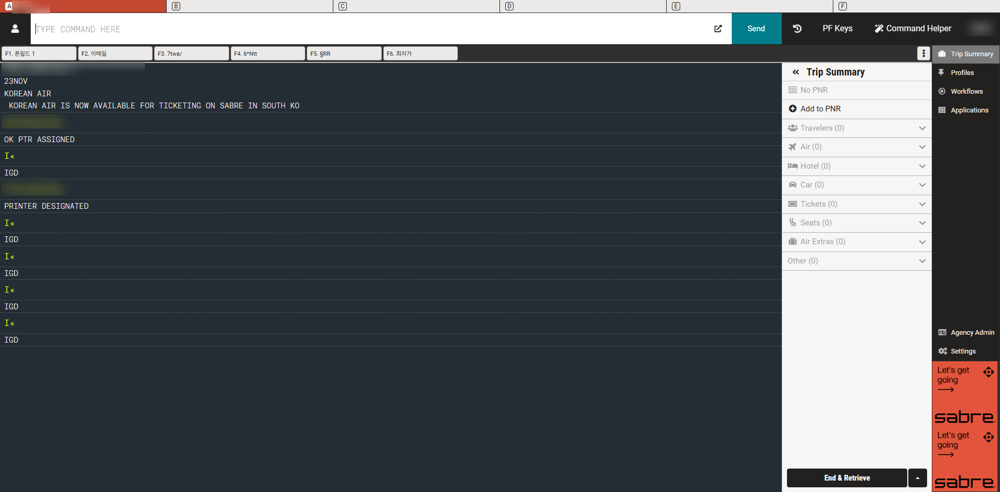
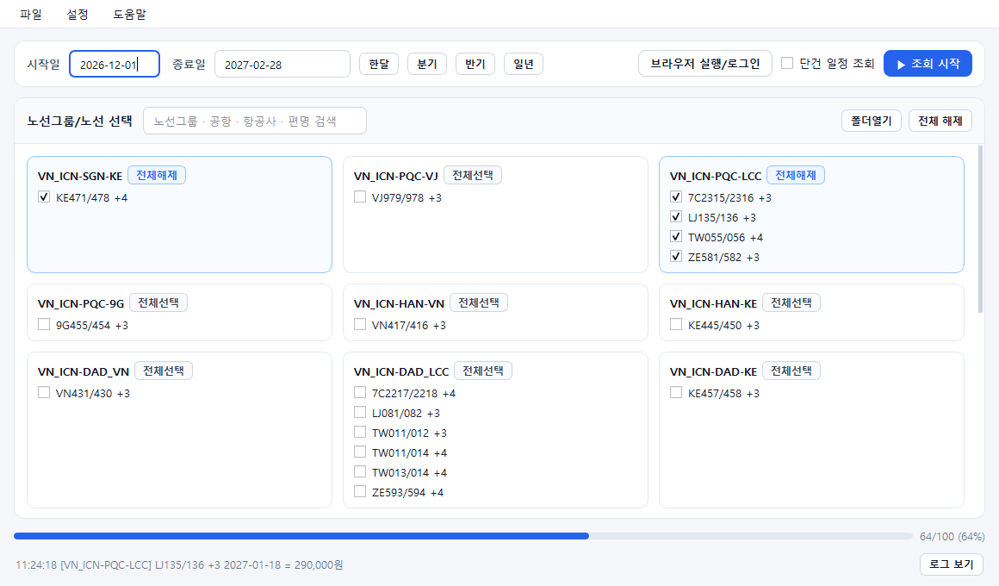
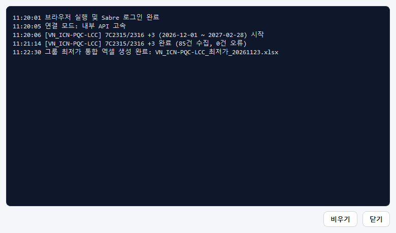

항공운임 조회 (SABRE VER.) 사용 안내
노선 등록 → Sabre 로그인 → 운임 조회 순서대로 따라 하시면 바로 사용할 수 있습니다.
1
조회 노선 관리
처음 실행하면 노선이 비어 있습니다. 상단 메뉴 설정 > 조회 노선 관리(Ctrl+R)에서 조회할 노선을 먼저 등록해 주세요.

- 예시 CSV로 바로 시작하기 : 프로그램 설치 폴더에 예시 파일(
sabre-routes.example.csv)이 함께 들어 있습니다. 하단 CSV 불러오기를 눌러 선택하면 예시 노선이 바로 등록되며, 엑셀로 열어 양식에 맞게 수정한 뒤 불러올 수도 있습니다. - 노선 추가 · 복사 · 삭제 : 빈 공간 우클릭으로 노선 추가, 기존 행 우클릭으로 노선 복사 / 삭제를 실행합니다.
- 간편 수정 : 행을 더블클릭하거나 F2를 눌러 수정하고 Enter로 저장합니다. (Esc 취소)
- 엑셀 붙여넣기 : 엑셀에서 여러 행을 복사(Ctrl+C)해 빈 공간에 붙여넣기(Ctrl+V)하면 한 번에 추가됩니다.
참고 · 필수 항목이 비어 있는 노선은 메인 화면에 표시되지 않습니다. 조회시작일을 비워 두면 메인 화면의 시작일이 자동 적용됩니다.
2
Sabre 로그인
메인 화면 상단의 브라우저 실행/로그인을 눌러 Sabre 작업창에 연결합니다.



- 로그인 정보 기억하기 : 체크해 두면 다음부터는 입력 창 없이 바로 로그인됩니다. (변경은 Ctrl+L)
- Okta 푸시 승인 : 휴대폰 알림을 승인하면 자동으로 연결되며, 완료 후 Sabre 창은 최소화 상태로 유지됩니다.
- 주의 : 조회하는 동안 최소화된 Sabre 브라우저 창은 닫지 마세요.
안심 사용 · 이 프로그램은 운임 조회 전용이며 예약 저장이나 발권은 절대 실행하지 않습니다.
3
기간 일괄 조회 (엑셀 저장)
원하는 기간과 노선을 선택하면 날짜별 운임과 그룹 최저가를 엑셀로 자동 저장합니다.

- 날짜 입력 : 숫자 8자리(예: 20261201)만 입력해도 자동으로 날짜 형식으로 바뀝니다. 종료일은 한달 · 분기 · 반기 · 일년 버튼으로 빠르게 지정하거나 비워 둘 수 있습니다.
- 노선 선택 : 검색창으로 원하는 노선을 찾고, 카드별 전체선택 / 전체해제 또는 개별 체크박스로 선택합니다.
- 최초 1회 저장 폴더 확인 : 처음 조회를 시작할 때 엑셀을 저장할 폴더 확인 창이 한 번 표시됩니다. 기본값은 프로그램 설치 폴더 안(output)이며, 경로에 접근할 수 없을 경우 조회 시작 전에 미리 안내합니다.
- 조회 실행 및 중단 : ▶ 조회 시작을 누르면 수집이 시작되며, 진행 중 같은 버튼(■ 정지)으로 멈출 수 있습니다.
- 엑셀 확인 : 완료 후 폴더열기를 눌러 저장된 엑셀을 확인합니다. (저장 폴더 변경은 Ctrl+E)
4
단건 일정 조회 (최저가 확인)
특정 출발일·도착일 견적이 필요할 때 여러 항공사 중 최저가 운임과 스케줄을 즉시 비교합니다.


- 모드 전환 : 상단 단건 일정 조회에 체크하면 한국출발일 · 한국도착일 · 인원 입력란과 초록색 ▶ 최저가 확인 버튼으로 바뀝니다.
- 야간 귀국 자동 보정 : 다음 날 새벽 한국에 도착하는 야간편도 한국도착일 기준으로 자동 맞춰 조회합니다.
- 견적 복사 : 결과 팝업에서 최저가 복사 또는 전체 복사를 눌러 바로 붙여넣어 사용하세요.
5
최종 조회일 업데이트
항공사 스케줄이 열려 있는 마지막 날짜를 자동으로 찾아 노선의 조회종료일을 갱신합니다.

- 실행 방법 : 조회 노선 관리(Ctrl+R) 하단의 최종 조회일 업데이트 버튼(전체) 또는 특정 행 우클릭 > 최종 조회일 업데이트(단건)를 누릅니다.
- 미리보기 적용 : 탐색이 끝나면 변경된 노선만 체크된 미리보기 창이 뜨며, 선택 항목 적용을 누르면 저장됩니다.
- 시즌분할(확인필요) : 같은 편명이 시즌별로 2줄 이상 나뉘어 있을 때 앞 시즌이 덮어써지지 않도록 자동 보호(체크 해제)됩니다.
6
실행 로그 · 업데이트 · 단축키

- 로그 보기 : 상세 진행 상황이나 오류 원인이 필요할 때 메인 화면 우측 하단 로그 보기를 눌러 확인합니다.
- 자동 업데이트 : 새 버전이 올라오면 프로그램 시작 시 자동으로 알려주며, 승인만 누르면 기존 설정과 노선을 유지한 채 업데이트됩니다. (수동 확인: 도움말 > 업데이트 확인)
| 단축키 | 기능 |
|---|---|
| Alt+Enter | 창 최대화 / 원래 크기 |
| Ctrl+Q | 창 닫기 / 프로그램 끝내기 |
| Ctrl+L | 설정 > 로그인 정보 |
| Ctrl+E | 설정 > 엑셀 저장 경로 |
| Ctrl+R | 설정 > 조회 노선 관리 |
| F2 / Enter / Esc | 노선 행 수정 / 저장 / 취소 |
| Ctrl+C / Ctrl+V | 셀 복사 / 엑셀 다중 붙여넣기 |
| ↑ / ↓ | 수정 중인 칸의 맨 앞 / 맨 끝 이동 |